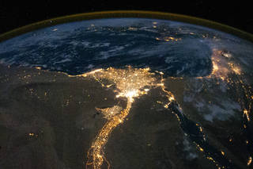
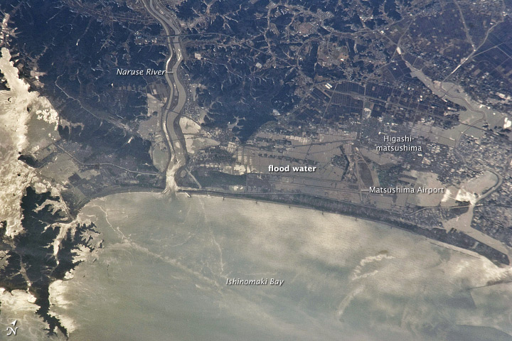
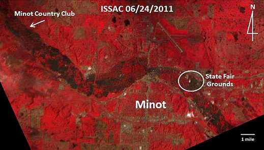
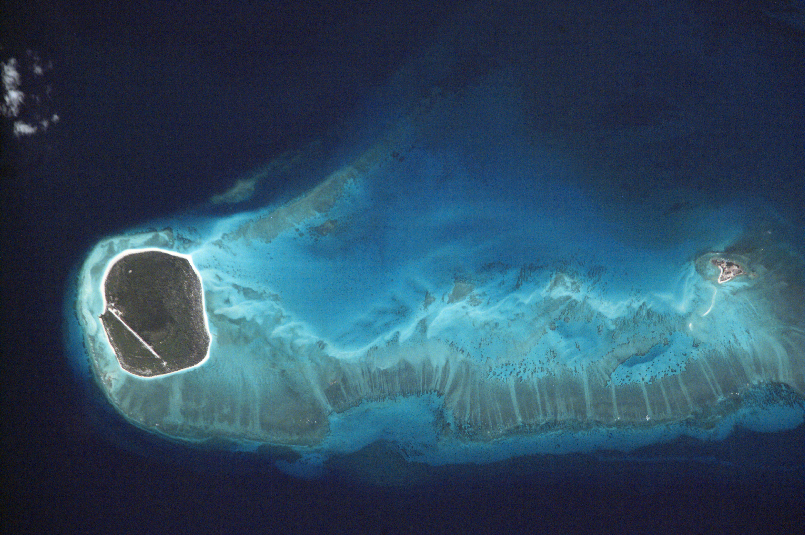
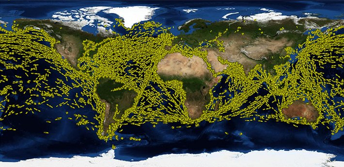
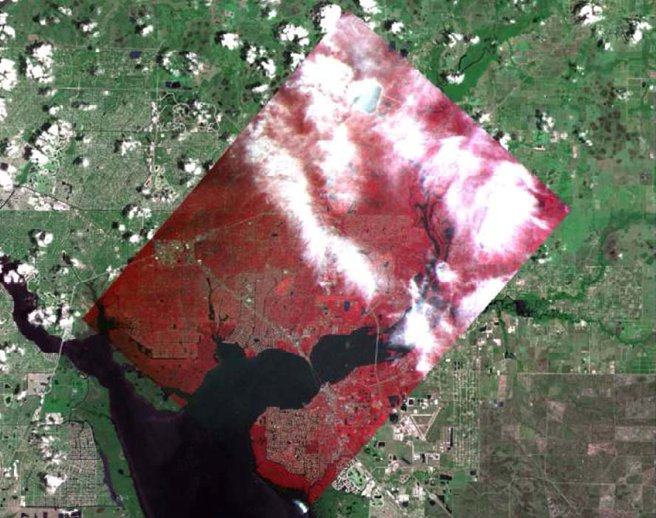

-
-
1998
-
20 November
 Module 1 was launched by Zariya(functional Cargo block) Russian space agency by a Russian proton rocket. It provided electrical power proportion and guidance to the Isis and weighs 19,000 kgs and 6 meters long 4.11 m wide two solar panels.
Module 1 was launched by Zariya(functional Cargo block) Russian space agency by a Russian proton rocket. It provided electrical power proportion and guidance to the Isis and weighs 19,000 kgs and 6 meters long 4.11 m wide two solar panels.
-
4 December
Module 2 Unity(Node1) by NASA. It is the Primary cargo. The Space shuttle Endeavour sts-88 crew was on board which carried essential fluids, life support systems, environmental control, data systems(for transmitting voice and video to mission control houston). It has 50,000 mechanical items. 216lines carrying fluids and gases 6 miles of wires and weighed 11,600 kg.
-
13 December
The endeavour undocking event took place and 2 days later deorbit burn
-
1999
-
27 May
-
2000
-
19 May
-
12 July
-
8 September
-
-
2010
-
Analysis of Earth's Coast
the Space Station's HICO and RAIDS Experiment Payload–Hyperspectral Imager for the Coastal Ocean while using an imaging spectrometer mounted outside the station on the Japanese Exposed Facility of the Kibo Laboratory, researchers are collecting data about the Earth that will help them to better understand coastal environments and other regions around the world. Coastal waters are an important link between local and global economic development and environmental sustainability.
-
Climate Change Study
In the past 150 years, human activities have resulted in significant changes in many aspects of Earth's environment, including increases in greenhouse gas concentrations, modification of the nitrogen and phosphorous cycle and major alterations of land use (e.g., deforestation). It is crucial that we understand the interaction of human-caused alterations and natural changes to predict future changes in the Earth's environment. In turn, this information will assist sustainable development in relation to human activities while minimizing degradation of the environment and limiting the vulnerability of society to climate change. -
2011
-
Tsunami Flooding in Northern Japan
On Mar. 11, 2011, the eastern coast of Japan was shaken by the magnitude 9.0 Tohoku earthquake - one of the trongest earthquakes ever recorded. Caused by fault movement between the Pacific and North American tectonic plates, the quake spawned a tsunami that inundated much of the eastern coastline of the island of Honshu. Along with the tragic loss of human life and widespread devastation to buildings, infrastructure, and agriculture, the tsunami damaged the Fukushima Daiichi nuclear power station, leading to radiation leaks and potentially long-term ecological hazards. -
2012
-
Monitoring the Lagoon of Venice
 In 2010, astronaut photographs of the Lagoon taken from the International Space Station caught the eye of Dr. Alessandro Mulazzani, an environmental consultant working with the Atlante della laguna ( Atlas of the Lagoon) project. The Atlas is a web-based Geographic Information System (GIS) that provides a wealth of information on the climate, ecosystem, hydrology, and human impacts to the Lagoon. Mulazzani characterized the value of high-resolution astronaut photography to the Atlas: "These photographs are very useful for us to provide an up-to-date view of this unique environment, the Lagoon of Venice, especially for general public and students…"
In 2010, astronaut photographs of the Lagoon taken from the International Space Station caught the eye of Dr. Alessandro Mulazzani, an environmental consultant working with the Atlante della laguna ( Atlas of the Lagoon) project. The Atlas is a web-based Geographic Information System (GIS) that provides a wealth of information on the climate, ecosystem, hydrology, and human impacts to the Lagoon. Mulazzani characterized the value of high-resolution astronaut photography to the Atlas: "These photographs are very useful for us to provide an up-to-date view of this unique environment, the Lagoon of Venice, especially for general public and students…"
-
Flooding in North Dakota
The first new systems ISSAC. The ISSAC was developed by students and faculty at the University of North Dakota, and its prime purpose is to collect data in support of agricultural activities. Today's farmers use data and information from a variety of remote sensing satellites to understand weather systems and climate patterns. The ISSAC will be another source of information for farmers and agricultural researchers by collecting imagery of croplands and other land cover over the Midwestern states during the growing season. -
Managaing Coral Reef Resources
Astronaut images were identified as an important contributing resource because they provided better resolution than some remotely-sensed data, were generally cloud-free, and covered areas not traditionally imaged by remote sensing platforms. Astronauts consciously target beautiful reef areas as they orbited over the large expanses of oceans. Although not a prime source of remotely sensed data, astronaut photography of remote reef locations in the world's oceans have provided valuable data that have been assimilated and fused into global databases that help to map reef systems, and monitor their changes. -
World's Sea Traffic
The AIS ground coverage from the station is between approximately 68° north and 68° south. The system consists of two antenna assemblies that were mounted on the outside of Columbus during a spacewalk in November 2009 as well as data relay hardware (the ERNO-Box) and a receiver mounted inside Columbus. The two operational phases with the first receiver from Norway, or NORAIS, which is operated by FFI/Norway, have been extremely successful, with data telemetry received by the Norwegian User Support and Operation Center, or N-USOC, in Trondheim, Norway, via ESA's Columbus Control Center in Germany. -
2013
-
Remote Sensing from ISS
Unlike many of the traditional Earth observations platforms, the station orbits the Earth in an inclined equatorial orbit that is not sun-synchronous. This means that the station passes over locations on the Earth between 52 degrees north and 52 degrees south latitude at different times of day, and under varying illumination conditions. Remote satellite-based Earth observing sensors are typically placed onto polar-orbiting, sun-synchronous platforms like Landsat7 or Terra in orbits designed to pass over the same spot on the Earth's surface at approximately the same time of day. -
2020
-
Forest fires
The AIS ground coverage from the station is between approximately 68° north and 68° south. The system consists of two antenna assemblies that were mounted on the outside of Columbus during a spacewalk in November 2009 as well as data relay hardware (the ERNO-Box) and a receiver mounted inside Columbus. The two operational phases with the first receiver from Norway, or NORAIS, which is operated by FFI/Norway, have been extremely successful, with data telemetry received by the Norwegian User Support and Operation Center, or N-USOC, in Trondheim, Norway, via ESA's Columbus Control Center in Germany. -
2013
Earth Science Division
Earth Science Division